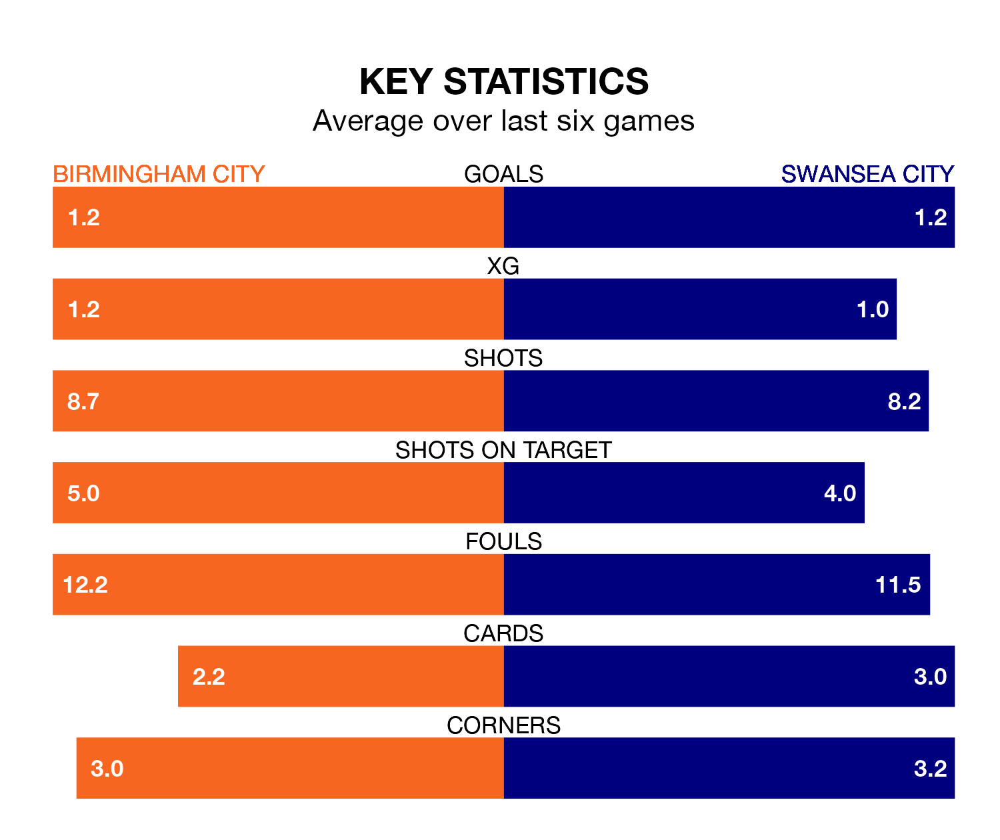

Birmingham City face Swansea City at St Andrew's on Saturday looking to secure a first win in six Championship games.
The Blues have lost three and drawn two matches since they last earned three points – against Cardiff City on December 13.
They face a Swansea side who have won two and drawn one over that time.
In the last 10 years, Birmingham and Swansea have played each other on 12 occasions. They won three each, and they drew six times.
On average, the Blues scored 1.2 goals and the Swans 1.5 in those matches.
Their last meeting was on August 5, when they played out a 1-1 draw.
Birmingham are 20th in the table after 26 games, of which they have won seven and drawn seven, earning 28 points.
Swansea are four places ahead of Birmingham City in 16th, with eight wins and eight draws putting them on 32 points.
With 30 goals in 26 games so far this season, the Blues are scoring at below the league average rate with 1.2 goals per game. And they are conceding more than average, letting in 41 goals at a rate of 1.6 per game.
Swansea City are also below average scorers, with 1.3 goals per game, compared to a league average of 1.4. They have conceded 1.5 goals per game.
In Joël Piroe, the Swans have one of the league's most on-form strikers so far this season. He has notched nine goals in 26 appearances, to sit seventh in the scoring charts.
His goal rate of one every 236 minutes is slightly quicker than that of Jay Stansfield, the hosts' top scorer with a goal every 247 minutes, and a total of seven goals in 23 games.
Birmingham's last match was on January 1, a 3-0 loss against Leeds United.
Swansea beat West Bromwich Albion 1-0 last time out, also on January 1, with Liam Cullen on the scoresheet.
Updated: 11:31, 09/01/24